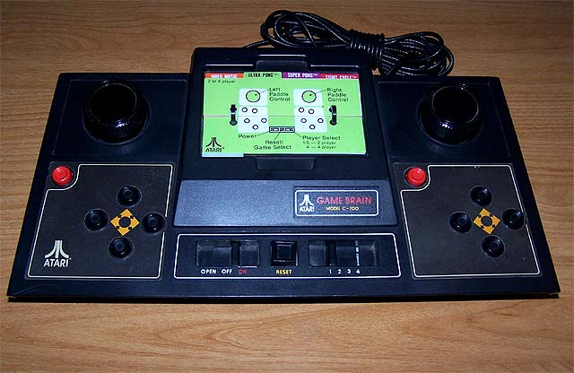

The Atari Game Brain (Model C-700) was Atari's first cartridge based video game console. The Game Brain actually was nothing
more then an empty box with no major circuitry at all. Basically
at had internal wiring run for input from built-in Paddles, built-in button controls
(pre-joystick design), fire buttons, game selection button, reset button
and power button.
These connections all ran to a cartridge
connector underneath the center cover of the console.
There
are also several jacks are on the rear of the unit that allowed the connection
of the older Atari paddle controllers previously used on the Atari Pong line of
dedicated consoles.

The "REAL" Brains of the Game Brain were the actual cartridges.
Atari had yet to finish a design for a multipurpose programmable console system,
that wouldn't happen until the Atari Video Computer System (VCS) model
2600 was to be released. (It was the decision to place
all focus on the Atari VCS that brought the immediate demise of the Game
Brain.)